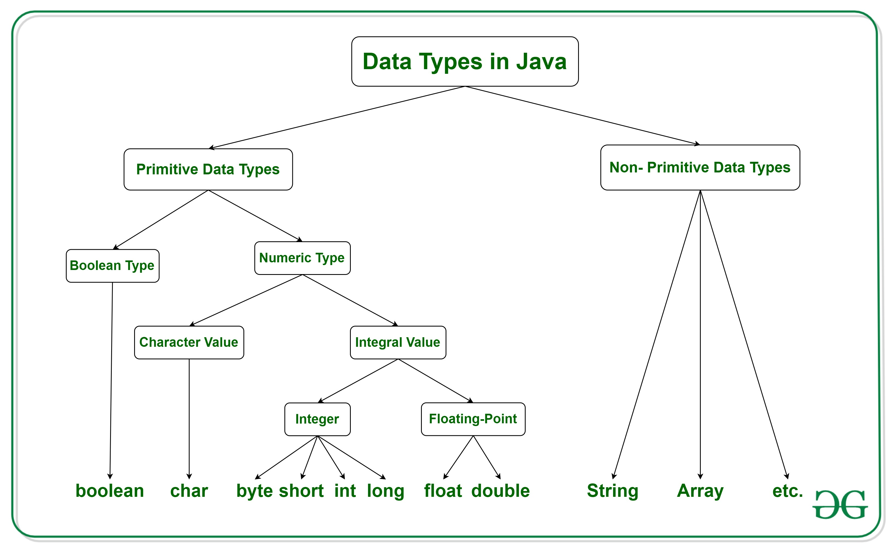
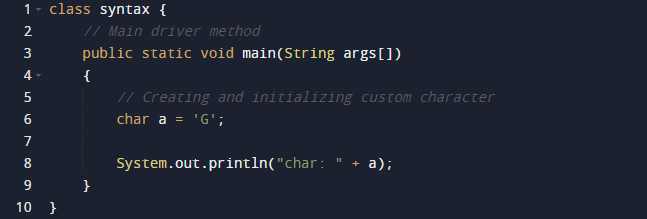

Java Identifiers
In programming languages, identifiers are used for identification purposes. In Java, an identifier can be a class name, method name, variable name, or label.
Example
In the above java code, we have 5 identifiers namely:
Test : class name.
main : method name.
String : predefined class name.
args : variable name.
a : variable name.
Rules of defining Java Identifiers
There are certain rules for defining a valid java identifier. These rules must be followed, otherwise we get compile-time error. These rules are also valid for other languages like C,C++.
The only allowed characters for identifiers are all alphanumeric characters([A-Z],[a-z],[0-9]), ‘$‘(dollar sign) and ‘_‘ (underscore).For example “syntax@” is not a valid java identifier as it contain ‘@’ special character.
Identifiers should not start with digits([0-9]). For example “123syntax” is a not a valid java identifier.
There is no limit on the length of the identifier but it is advisable to use an optimum length of 4 – 15 letters only.
Reserved Words can’t be used as an identifier. For example “int while = 20;” is an invalid statement as while is a reserved word. There are 53 reserved words in Java.
Java identifiers are case-sensitive.
Examples of valid identifiers
MyVariable, MYVARIABLE, myvariable, x, i, x1, i1,_myVariable
$myVariable, sum_of_array, syntax123
Examples of invalid identifiers
My Variable // contains a space
123syntax // Begins with a digit
a+c // plus sign is not an alphanumeric character
variable-2 // hyphen is not an alphanumeric character
sum_&_difference // ampersand is not an alphanumeric character
Variables in Java
Variable in Java is a data container that saves the data values during Java program execution. Every variable is assigned a data type that designates the type and quantity of value it can hold. A variable is a memory location name for the data.
How to declare variables?
We can declare variables in Java as pictorially depicted below as a visual aid.

From the image, it can be easily perceived that while declaring a variable, we need to take care of two things that are:
1. datatype: Type of data that can be stored in this variable.
2. data_name: Name given to the variable.
In this way, a name can only be given to a memory location. It can be assigned values in two ways:
• Variable Initialization
• Assigning value by taking input
How to initialize variables?
It can be perceived with the help of 3 components that are as follows:
• datatype: Type of data that can be stored in this variable.
• variable_name: Name given to the variable.
• value: It is the initial value stored in the variable.

Illustrations
Types of Variables
Now let us discuss different types of variables which are listed as follows:
1. Local Variable
2. Instance Variable
3. Static Variable
Let us discuss the traits of every type of variable listed here in detail.
1. Local Variables
A variable defined within a block, method or constructor is called a local variable.
• These variables are created when the block is entered, or the function is called and destroyed after exiting from the block or when the call returns from the function.
• The scope of these variables exists only within the block in which the variables are declared, i.e., we can access these variables only within that block.
• Initialization of the local variable is mandatory before using it the defined scope.
Output
Local Variable: 10
2. Instance Variables
Instance variables are non-static variables and are declared in a class outside of any method, constructor, or block.
• As instance variables are declared in a class, these variables are created when an object of the class is created and destroyed when the object is destroyed.
• Unlike local variables, we may use access specifiers for instance variables. If we do not specify any access specifier, then the default access specifier will be used.
• Initialization of an instance variable is not mandatory. Its default value is 0.
Output
Out Group is: Group 1
3. Static Variables
Static variables are also known as class variables.
• These variables are declared similarly as instance variables. The difference is that static variables are declared using the static keyword within a class outside of any method, constructor or block.
• Unlike instance variables, we can only have one copy of a static variable per class, irrespective of how many objects we create.
• Initialization of a static variable is not mandatory. Its default value is 0.
Output
Syntax: Academy
Data Types in Java
Data types are different sizes and values that can be stored in the variable that is made as per convenience and circumstances to cover up all test cases. Also, let us cover up other important ailments that there are majorly two types of languages that are as follows:
1. First, one is a Statically typed language where each variable and expression type is already known at compile time. Once a variable is declared to be of a certain data type, it cannot hold values of other data types.
2. The other is Dynamically typed languages. These languages can receive different data types over time.
Java is statically typed and also a strongly typed language because, in Java, each type of data (such as integer, character, hexadecimal, packed decimal, and so forth) is predefined as part of the programming language and all constants or variables defined for a given program must be described with one of the data types.

Java has two categories in which data types are segregated
1. Primitive Data Type: such as boolean, char, int, short, byte, long, float, and double
2. Non-Primitive Data Type or Object Data type: such as String, Array, etc.
Types Of Primitive Data Types
Primitive data are only single values and have no special capabilities. There are 8 primitive data types. They are depicted below in tabular format below as follows:

Let us discuss and implement each one of the following data types that are as follows:
Type 1: boolean
Boolean data type represents only one bit of information either true or false which is intended to represent the two truth values of logic and Boolean algebra, but the size of the boolean data type is virtual machine-dependent. Values of type boolean are not converted implicitly or explicitly (with casts) to any other type. But the programmer can easily write conversion code.
Syntax: boolean booleanVar;
Size: Virtual machine dependent
Values: Boolean such as true, false
Default Value: false
Example
Output
Hi Syntax
Hello Syntax
Type 2: byte
The byte data type is an 8-bit signed two’s complement integer. The byte data type is useful for saving memory in large arrays.
Syntax:
byte byteVar;
Size: 1 byte (8 bits)
Values: -128 to 127
Default Value: 0
Example
Output
126
127
-128
-127
Type 3: short
The short data type is a 16-bit signed two’s complement integer. Similar to byte, use a short to save memory in large arrays, in situations where the memory savings actually matters.
Syntax:
short shortVar;
Size: 2 byte (16 bits)
Values: -32, 768 to 32, 767 (inclusive)
Default Value: 0
Type 4: int
The int data type is a 32-bit signed two’s complement integer.
Syntax:
int intVar;
Size: 4 byte ( 32 bits )
Values: -2, 147, 483, 648 to
2, 147, 483, 647 (inclusive)
Type 5: long
The range of a long is quite large. The long data type is a 64-bit two’s complement integer and is useful for those occasions where an int type is not large enough to hold the desired value.
Syntax:
long longVar;
Size: 8 byte (64 bits)
Values: {-9, 223, 372, 036, 854, 775, 808} to
{9, 223, 372, 036, 854, 775, 807} (inclusive)
Type 6: float
The float data type is a single-precision 32-bit IEEE 754 floating-point. Use a float (instead of double) if you need to save memory in large arrays of floating-point numbers.
Syntax:
float floatVar;
Size: 4 byte (32 bits)
Values: upto 7 decimal digits
Example
Output
9.87
Type 7: double
The double data type is a double-precision 64-bit IEEE 754 floating-point. For decimal values, this data type is generally the default choice.
Syntax:
double doubleVar;
Size: 8 bytes or 64 bits
Values: Upto 16 decimal digits
Type 8: char
The char data type is a single 16-bit Unicode character.
Syntax
char charVar;
Size: 2 byte (16 bits)
Values: ‘\u0000’ (0) to ‘\uffff’ (65535)

Output
char: G
Non-Primitive Data Type or Reference Data Types